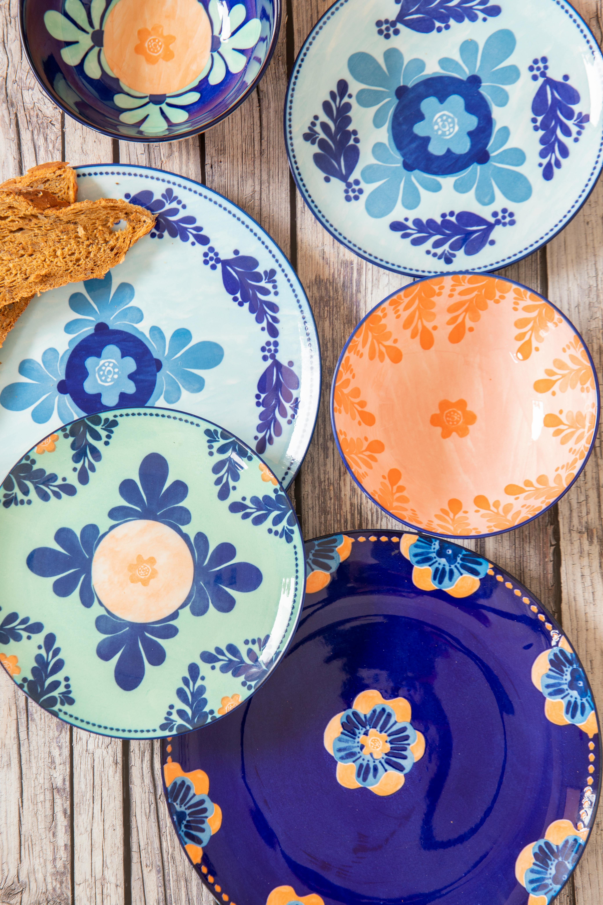

Pjatë Dekorative prej Balte
Kategori: Handmade

Kjo pjatë prej balte është pikturuar me dorë duke përdorur motive gjeometrike të frymëzuara nga traditat vendase. E përsosur si dekor murale ose dhuratë artizanale.
- Material: Baltë e pjekur dhe bojë rezistente
- Diametër: 25 cm
- Për përdorim dekorativ – jo për ushqim